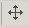

Level Editor Tutorial
This article contains links to the BioWare Social Network (BSN), which is now closed.
These links should be replaced with working links where possible, and tutorials edited to remove reliance on BSN.
Building your room (Interior Level)
How to create/lightmap a Level for use in an Interior Area: Objective: Following along with this tutorial, you should be able to create a simple room from scratch in 10 minutes or less
This was lifted from a posting by St4rdog http://social.bioware.com/forum/1/topic/8/index/150840 It needs some additional formatting love, but is as good starting place for people to create usable interior levels
File > New > Level > Room Level
- Click on "New Area" in top-left list > Object Inspector in bottom-right > Layout Name > anything under 8 characters no spaces or special characters (*,&,%, etc).
- Click the Setup Start Point icon, then click anywhere to make a start point.
- Select the Area, then add the Start Point Name in the Object Inspector.
- Right-click in 3D view and select Insert > New Room.
- Click Models (blue box) in the Palette in the top-right. These folders contain everything such as floor tiles, walls, etc.
- Enable Grid Snap with the magnet icon to make sure they line up.
- The "prp" folder contains things like beds/barrels to clutter your Level.
Hint: Use DATool (3rd party tool downloadable at http://social.bioware.com/project/41/ )to browse through these quickly to find the floors/walls you want.
- Any gaps you can see between models (such as wall sections) will be visible in game. When you have time to refine the layout, you can remove most hairline gaps by setting exact X Y Z coordinates in the toolset (though sometimes 0.99 or 1.01 looks better than 1.00). Larger gaps may require the use of tileset assets such as pillars. The black box tileset (blk) can be placed outside a room to cover up any defects.
Hint: If you need lots of wall sections quickly, place one at a convenient location e.g. (0,0). Copy (Ctrl-C) then Paste (Ctrl-V) as many as you need. In the Object Inspector, change the coordinates of successive sections to (0,8), (0,16) etc or drag manually if you can do that quicker.
Note: If you get "Cannot spawn models into the selected parent object" when trying to place a model then you don't have "New Room" selected.
Working with multiple rooms
In general it is best to define each building room as a new room in the level. This becomes important when you work on lighting. To physically connect rooms you need to slide them together to get the doors to line up, they do not line up automatically. It takes some trial and error but becomes easier with practice.
Use the Room Properties icon to specify which rooms are connected etc.
Pathfinding
Click the Generate Pathfinding icon. Green dots indicate where the player will be allowed to walk.
For this to work, the area properties must name a valid start point, and it needs to be bounded by walls or other obstacles.
Hint: you may need to place another startpoint in any room that can't be reached from the main startpoint. That would apply, for example, to rooms reached by transition doors within the area.
Adding lights
Two very simple alternatives are given here.
The first is minimal, with shadows.
The second makes no shadows, but ensures that faces are never in darkness.
Method 1
- Right-click on "New Room" in top-left list > Insert > New Light
- Move it up off the floor a little (e.g. Z = 2). In Object Inspector > Affects Characters TRUE > "Color Intensity" 2 or more > "Light Type" Point - Static (lc) > Choose any bright color (this light illuminates both the level and the characters).
- Copy and paste. In Object Inspector >"Light Type" Ambient - Baked (you must have an ambient light, and this approach stops your shadows being pitch black) > Choose a dark blue colour and keep the Color Intensity under 2/3.
Note: I'm not sure what the mix of Baked/Static light is supposed to be. If you just put a Baked + Ambient it complains about not having Static, but if you put a Static + Ambient it seems to work fine, but the wiki says Static is the most expensive.
Method 2
- Right-click on "New Room" in top-left list > Insert > New Light anywhere in the room.
- Raise it up off the floor a little (e.g. Z = 2).
- In Object Inspector > "Light Type" Ambient - Baked > Colour 1,1,0.86 > leave the colour intensity at 1 (this ambient light will light the level but not the characters).
- Copy and paste. In Object Inspector > "Light Type" Point - Static > Affects Characters TRUE > Affects Level FALSE > Colour 0.70,0.70,0.65 > Colour Intensity 1.7 Point Radius 10000 (this will light your characters).
- Copy and paste until you have 3-4 static character lights.
- Arrange the character lights in a circle outside all of the rooms.
Light Probe
Whether you use method 1 or 2,
- Right-click on "New Room" in top-left list > Insert > New Light Probe
Note : you need a light probe to make character and water lighting work properly. The exact position doesn't seem to matter much.
Rendering Lightmaps
- Press the Render Lightmaps icon (you need ActivePython 2.5 installed to default location, installation instructions for python can be found here). When it's done click the Display Lightmaps On/Off icon in the top-left to refresh the results.
- Uncheck the "View Models Fully Lit" icon in the lop-left. You should see shadows from any objects you've dropped in.
Note: Lightmap-atlas messages might appear the first time you render. That seems normal. Sometimes re-rendering the lightmaps messes them up badly when Display Lightmaps On/Off is on. It doesn't seem to use the latest lightmaps. Try pressing Display Lightmaps On/Off a few times to update it. If they're still messed up sometimes one of these fixes it (don't know which) unloading/reloading your Area or Level/changing your Area's layout property/posting your Level to Local.
Adding the Minimap
Select the area. Right click, then select Minimap > Minimap Selection Tool. The default green box appears. Right click on the area again, Minimap > Post Minimap to Local. It's possible to handcraft or refine the minimap, as detailed under Custom minimaps.
Exporting
- Press the Do All Local Posts icon to the right of the lightmapping icons. It will export the name you typed into the "New Area" "Layout Name".
- If that doesn't work, select the area then Edit > Post Selection To Local.
- If there's a complaint about walkable/player start then delete your old start then place a new one on a flat area.
- Save your .lvl file. It's not used by the game and the name/location doesn't matter. Only the exported/posted files are used.
Using this in an Area
File > New > Area > Any Name
- In the Object Inspector > Area Layout you should get a "..." box (make sure it's Checked Out) > click then select your "Layout Name" which should now be there.
- Now you have a pretty lightmapped level inside an area.
Building your terrain (Exterior Level)
How to create/lightmap a Level for use in an Exterior Area: Objective: Following along with this tutorial, you should be able to create a simple terrain from scratch.
File>New>Level
- Choose Terrain (Landscape) Level and then click Next.
- Accept the default values for the purpose of this tutorial and click Next and then click Finish. You can learn more about what the different terrain options do at the Level editor page.
You should now see a flat, dark piece of terrain. To move around you hold down the mouse wheel. If you want to rotate the view press the Alt key while holding down the mouse wheel. You will want some light so you can see what you are doing, so we will generate a light source next.
Tip: When choosing the size of your terrain level think about where you are going to put horizon and vista objects, like distant mountains and tree lines. You may need to allow for extra space around your adventure area to place those items.
Grid Size
If you want to work with a larger grid than the one provided by default you can change the grid size by going to:
Tools/Options/Level Editor/Grid Square Size.
This will not change the actual dimensions of the terrain level that you created, it only changes the size of the squares in the grid.
Define an area
Must be done before rendering the lightmap.
- Click on the purple -sign and click Define Area. Start in one corner and draw the green square to define the area that you will export.
- Fill in the box Layout Name, max seven characters.
- Fill in the box Name.
{kind=link}
Lighting
- Right click on Terrain World to the upper left and choose Insert>New Light. This will spawn a light source in your area. Make sure you change the Light Type to Ambient - Baked (L). Be sure to click on the Render Lightmaps button if you want to see how your ambient light is working.
Now that the terrain is lit we can modify it.
Modifying Terrain
The Terrain mesh tools allow you to modify the terrain by changing elevations, smoothing edges, flatting terrain, or painting textures.
Water
First use the Terrain mesh tools to make a hole. It doesn't have to be deep. Then right-click on Terrain world and select Insert -> New Water Mesh. Double Click on the Water Mesh to zoom to it. By default it gets placed in a corner. Using the 3 Axis Movement tool 
{kind=link}
See also Bug: Water plane missing in-game for an important workaround.
Placing Models
- Click the blue box in the Palette Window to access the models that come with the game. The Model list shows pictures of many of the models available.
- The Model page has more details on how to work with models.
Tip 1: I had to change the Snap Options to make the models go where I wanted them. The settings I use were 0.10 for Snap to Grid and Snap Z Size. I also had to turn off Enable Snap to Surface whenever I wanted to change the vertical position of something (like creating the second floor of a building). Enable Snap to Surface is not applied globally, so once you turn it off and position an object vertically, turning it back on will not move that object unless you select it (or have it selected when you turn it back on).
Tip 2: When placing premade cottages be aware that the door frames you can see attached to those buildings DO NOT have built in door hooks (see Area tutorial for information on placing doors). You can place a door frame model (for example, fhe_doorfrs_0) over the built in door frame to generate a door hook. The door frame model has to be placed from the Level Editor.
Adding Vegetation and Wind
The Vegetation page includes a list with pictures of the various plants available for placement. If you do not see the plants once you place them with the Scatter Object Tool then you may need to adjust your SpeedTree Rendering Distance Selector. This is a drop-down that you will see in the Tool Bar. It lists the distances at which plants will be visible. I set it to Very Far and left it there.
Each level can have one active wind object in it. The location of the wind object doesn't matter. The wind object defines how wind behaves on this level, which is used for such things as flapping banners and swaying trees.
Image:Level editor wind object.png
The Wind Object may be found by right clicking on Terrain World and selecting:
Insert>New Wind Object
Visual Effects (VFX)
Placeable visual effects like flames or smoke are considered to be art assets in the Dragon Age toolset, so you need to place them from within the Level Editor.
The VFX Tutorial provides guidance on creating and placing visual effects.
Path finding and Obstructions
The path finding process lays down a grid of points that are marked "accessible" if they can be reached from a path finding start spot via passable terrain. This is essentially a flood-fill algorithm.
You must create an Exportable area before you can generate any path finding data.
- Click on the purple + in the tool bar (
 ). This will open an Area Properties window. The Level editor page has more details on this process, so I will just keep these steps very basic.
). This will open an Area Properties window. The Level editor page has more details on this process, so I will just keep these steps very basic. - Name your Exportable Area in the Layout Name field of the Area Properties window. The name of an exportable area layout is limited to seven characters. BioWare uses the following naming system:
- Three-letter prefix that describes the region or plot the layout is for. For example, "ost" for Ostagar and environs.
- Three-digit number that uniquely identifies the layout within that region. Increments of one hundred are commonly used for major areas to allow sub-regions to be grouped together.
- A single character identifying variants of the layout. For example, a "d" suffix for the "daytime" version of an exterior layout. "d" is also often used to mean "default", for areas where day and night are irrelevant (deep in a cave, for example).
- Define your walkable area. Do this by clicking the Define Area button in the Area Properties window. The green box must include any areas that you want players to be able to walk. If you click in a corner of the level the green box will appear there. You can then expand it by dragging the corner.
- Close the Area Properties window.
In most cases you will want to block off certain areas of your terrain.
- Turn on the Build Terrain Blocking tool. It is the middle mountain icon.
- Using left-click to place and right-click to end chains/delete, place down blocks or 'walls' around areas you don't want the player to enter
- Be sure to provide visual clues if it isn't obvious why the player can't walk there.
Now that you have your exportable area you can generate path finding data.
- Place a Starting Point in your level. I found that path finding does not work if you place the Starting Point before you have an Exportable Area. To place a Starting Point click on Setup Start Point in the tool bar.
- Record the name of your Starting Point by clicking on it and looking at the name in the Object Inspector. Do not change the name - changing the name can prevent path finding from working.
- Click Exportable Area Properties in the tool bar to open the Area Properties window. Put the Start Point name in the appropriate field and close the window.
You should now be ready to generate pathfinding data by clicking on the Generate Pathfinding for Active Area button in the tool bar.
Converting Levels into Areas
Click on Do All Local Posts (you can avoid problems by generating a lightmap and pathfinding before doing local posts). This can be found in the menu at Tools>Export>Do All Local Posts
Your level has now been converted and can be used to make an area. The Area tutorial will walk you through what to do next.